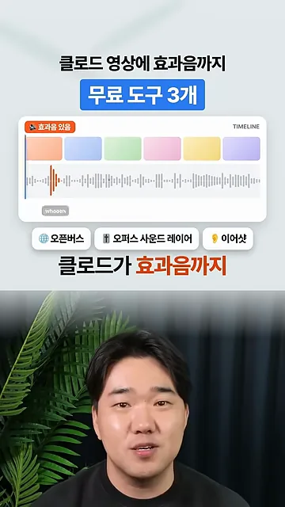
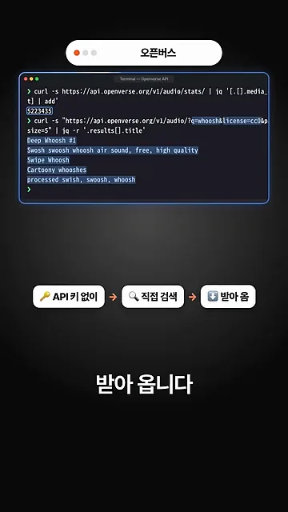
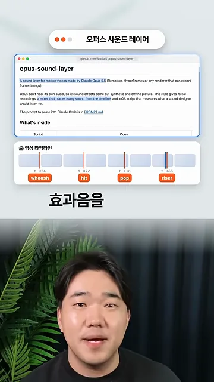
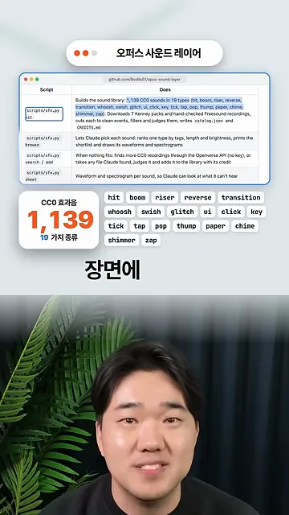
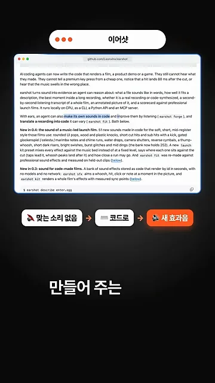
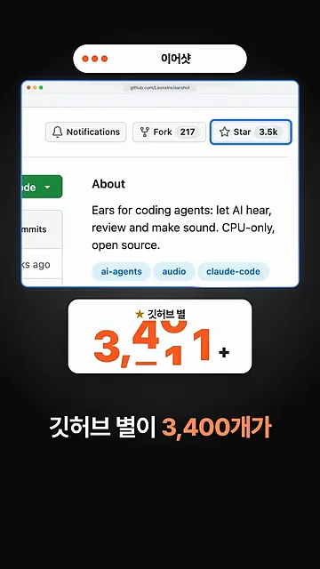
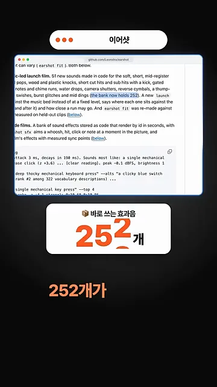
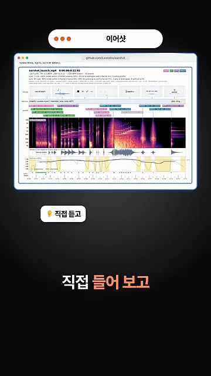
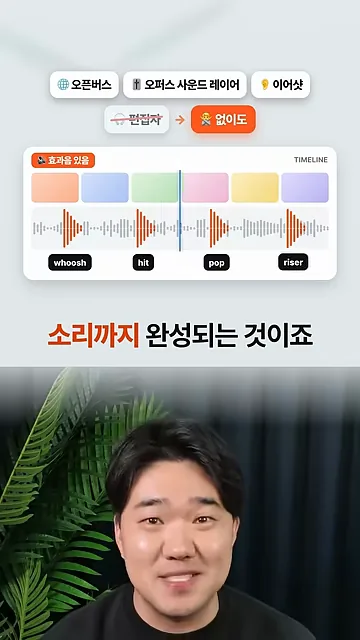

Openverse: API 키 없이 522만 개 소리를 찾아요
영상은 문제부터 꺼내요. 클로드로 만든 영상은 효과음이 밋밋하면 바로 티가 나요. 그래서 무료 도구 세 개를 붙여 클로드가 효과음까지 알아서 넣게 하자는 거예요. 첫 화면 아래쪽 칩 세 개가 이 영상이 소개하는 도구 이름이에요. 위의 타임라인에는 'whoosh' 소리 하나가 붙어 있어요.

API 키 없이 검색하고 받아 와요
첫 번째 도구 Openverse는 무료 오디오 저장소예요. 소리가 522만 개 있어요. 화면의 터미널은 두 번 요청을 보내요. 첫 줄은 audio/stats/로 전체 개수를 더해서 5223435를 얻어요. 둘째 줄은 q=whoosh&license=cc0 조건으로 검색해서 'Deep Whoosh #1', 'Swipe Whoosh' 같은 제목 다섯 개를 받아요. 아래 칩은 'API 키 없이 → 직접 검색 → 받아 옴' 순서예요.

opus-sound-layer: 정확한 프레임에 효과음을 얹어요
두 번째 도구는 깃허브 저장소 opus-sound-layer예요. 영상 타임라인을 읽고, 소리가 필요한 순간마다 정확한 프레임에 효과음을 얹어요. 화면 아래 '영상 타임라인' 카드를 보면 빨간 선마다 프레임 번호와 소리 종류가 붙어 있어요. 24프레임에 whoosh, 72에 hit, 118에 pop, 163에 riser예요.

1,139개를 19가지 종류로 나눠 둬요
소리는 미리 깔아 둔 라이브러리에서 골라요. 왼쪽 카드의 'CC0 효과음 1,139'가 전체 개수, '19 가지 종류'가 분류 수예요. 오른쪽 태그가 그 19가지예요. 장면에 맞는 종류를 정하고 그 안에서 하나를 골라 쓰는 방식이에요.

| 화면에 나온 19가지 종류 |
|---|
| hit · boom · riser · reverse · transition · whoosh · swish · glitch · ui · click · key · tick · tap · pop · thump · paper · chime · shimmer · zap |
earshot: 없으면 코드로 만들고 직접 들어 봐요
세 번째 earshot은 맞는 소리가 없을 때 코드로 새 효과음을 만들어 줘요. 아래 칩 '맞는 소리 없음 → 코드로 → 새 효과음'이 그 흐름이에요. 위의 README에서는 'make its own sounds in code' 부분이 강조돼 있어요.

별 3,400개, 바로 쓰는 효과음 252개
영상은 earshot이 깃허브 별 3,400개가 넘는다고 해요. 화면 오른쪽 위 Star 버튼에 3.5k가 보여요. 저장소 소개는 'Ears for coding agents', 코딩 에이전트에게 귀를 달아 준다는 뜻이에요.

다음 화면은 README에서 '(the bank now holds 252)' 부분을 짚어요. 코드로 만들어 둔 효과음이 252개 있어서 바로 꺼내 쓸 수 있다는 뜻이에요.

만든 소리를 직접 들어 보고 확인해요
earshot은 만든 소리가 영상에 맞는지 직접 들어 보고 확인까지 한다고 해요. 화면의 그림은 영상 한 편의 소리를 풀어 놓은 결과예요. 가운데 보라·주황 띠가 스펙트로그램이고, 그 위 색 막대들이 소리 이벤트 표시예요.

마지막 화면은 세 도구를 나란히 놓고 '편집자'를 지운 뒤 '없이도'로 바꿔요. 아래 타임라인에는 whoosh, hit, pop, riser가 각자 자리에 붙어 있어요. 영상의 결론은 이 세 도구면 편집자 없이도 소리까지 완성된다는 거예요.
